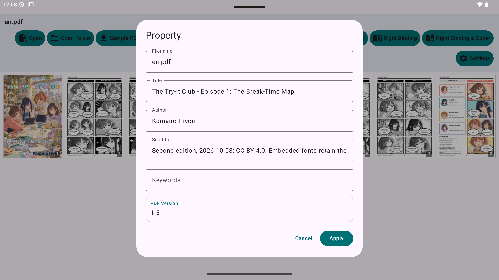

Mihiraki PDF Utility
Intuitive PDF spreading, splitting, at merging para sa Android.
Intuitive PDF spreading, splitting, at merging para sa Android.
Ang Mihiraki PDF Utility ay isang tool para sa mga mambabasa at creator. Ayusin ang mga na-scan na libro, pagsamahin ang mga dokumento, at muling ayusin ang mga pahina.

Tingnan ang dalawang pahina nang magkatabi. May suporta para sa RTL reading.

Hatiin ang mga spread page sa mga indibidwal na pahina.

Ayusin ang order ng pahina sa pamamagitan ng pag-drag ng mga thumbnail.

Pagsamahin ang maraming PDF file sa isang dokumento.

Gumagana nang maayos sa mga smartphone, tablet, at Chromebook.



Download sample PDF manga to test the app:
51 PDF sa 14 na wika at 17 baryante ng wika/rehiyon, na may tig-tatlong yugto. Magkahiwalay ang mga filter para sa Spain/Latin America, Brazil/Portugal, at Taiwan/Hong Kong. Pamantayang nakasulat na Chinese ang edisyong Hong Kong, hindi kolokyal na Cantonese. Sinusuri ang laki at SHA-256; pinapanatili ang mga lumang PDF.
I-download ang mga sample na PDF
"The Try-It Club" Episodes 1 & 2
© 2026 Komairo Hiyori
Parts of this work for which the publisher holds copyright and other licensing rights are provided under the Creative Commons Attribution 4.0 International License (CC BY 4.0).
When reusing this work, please display the work title, author name "Komairo Hiyori", the source of the original work, and a link to the license, and clearly indicate if any changes were made.
Generative AI was used in the production of text and images, as well as the translation of this work. Materials with rights held by third parties, such as fonts, are subject to their respective licenses. Nothing in this license constitutes a restriction on the use of material that is not protected by copyright or similar laws.
Nasa Ingles ang mga video at bubukas ang mga ito sa YouTube.